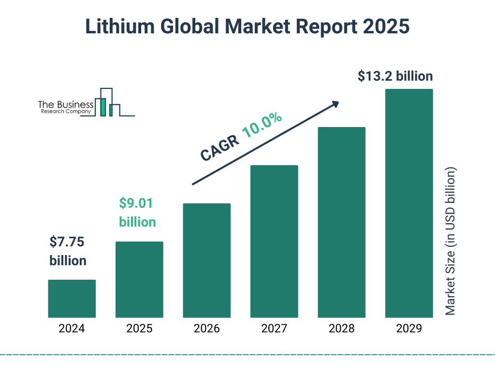
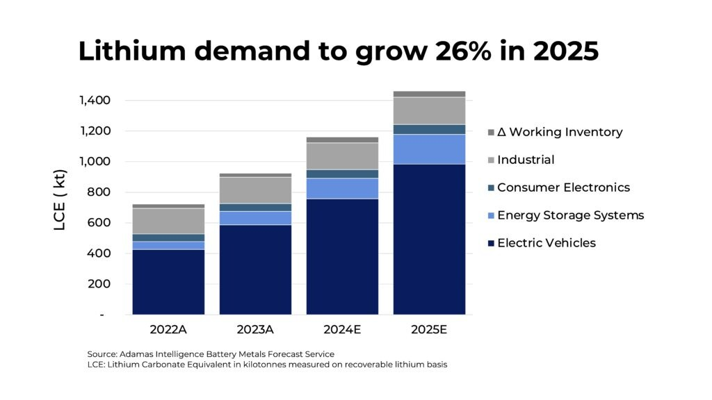
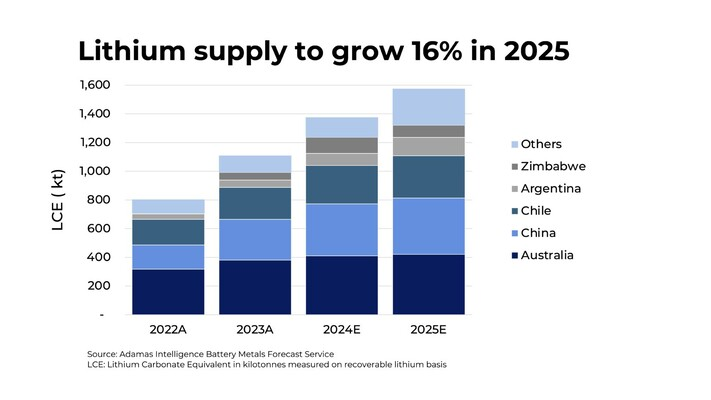
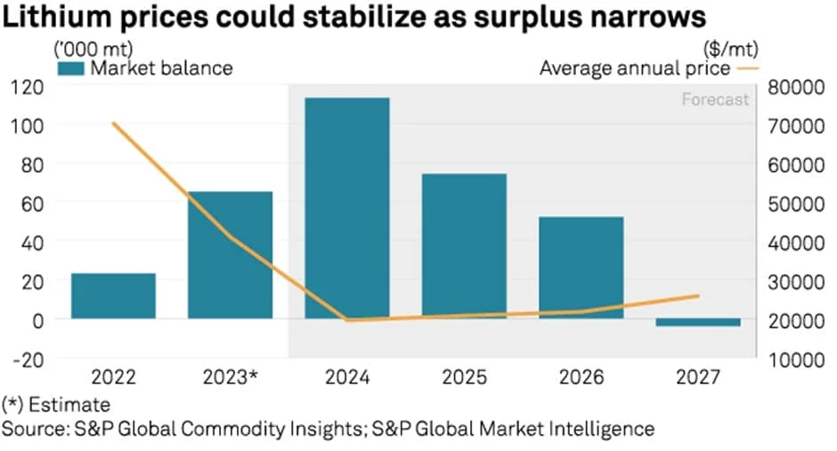

The lithium market is witnessing a shift in 2025, driven by a combination of supply expansions, evolving battery technologies, and global demand fluctuations. As the backbone of the electric vehicle (EV) and energy storage sectors, lithium prices have always been subject to volatility. However, this year brings new challenges and opportunities for industry players.
Current Market Trends
Price Decline and Oversupply
In February 2025, lithium carbonate prices fell below $10,000 per metric ton, reaching $9,550/t in North Asia, marking a four-year low. This decline is primarily attributed to a surge in supply from major producers like Chile and new projects in Mali and Argentina. The market is experiencing a surplus, with supply growth outpacing demand slightly, leading to limited price movements.
Regional Production Shifts
Emerging markets such as Argentina and Zimbabwe are significantly increasing their lithium output, altering global supply dynamics. Argentina, in particular, is expected to nearly double its lithium chemical production in 2025, positioning it as a key player in the market.
Technological Advancements
The push for alternative battery chemistries, such as sodium-ion and solid-state batteries, has slightly softened lithium's dominance but has not replaced its necessity. Instead, advancements in lithium extraction and recycling technologies have enhanced supply efficiency and reduced costs, providing a buffer against extreme price swings.

Lithium Price Snapshot in 2025
On 21 February 2025, historic price volatility is being witnessed in the lithium market:
● Battery-Grade Lithium Metal is $80,354.23 USD/mt, ranging between $79,136.74 and $81,571.72 USD/mt.
● Battery-Grade Lithium Carbonate is $9,271.17 USD/mt, ranging from $9,179.86 to $9,362.49 USD/mt.
● Lithium Hydroxide (Coarse Particles) is $8,571.12 USD/mt, ranging from $8,375.1 to $8,767.13 USD/mt.
These trends and figures represent increasing prices and high market volatility, which are indicated by both increasing demand and tightened supply. Increasing demand and tightened supply of EVs and energy storage devices can account for increasing lithium hydroxide and lithium carbonate prices.
Demand and Supply Projections
Growing Demand from EVs and ESS
Despite the current oversupply, demand for lithium is expected to grow by over 20% in 2025, driven by the expanding electric vehicle (EV) and energy storage system (ESS) sectors. However, supply is projected to increase by more than 15%, which may temper significant price increases.

Supply Chain Pressures
The lithium market faces challenges due to production cuts, shifting demand patterns, and geopolitical tensions. These factors are expected to tighten the market in 2025, although uncertainty remains.

Future Outlook
Potential for Price Stabilization
While prices are unlikely to recover in 2025 due to high inventories and overcapacity in China, some analysts predict a stabilization of prices between $9,000/t and $12,000/t for battery-grade lithium carbonate by the end of 2025. The market could start to recover in the second half of 2026 as carmakers increasingly adopt lower-cost lithium iron phosphate (LFP) batteries.

Long-Term Supply Deficit
Looking beyond 2025, a supply deficit is anticipated due to the rapid growth in demand for lithium-ion batteries. This could lead to increased investment in new projects to meet future requirements.
Conclusion
The destiny of lithium in 2025 would be shaped by a combination of the emerging market supply, regulatory risk, geopolitics, and uncontrolled EV and renewable energy market growth. As the whole world goes green, lithium prices will remain highly volatile, and prices can shoot through the roof as a reaction to supply constraints, green policies, and market sentiment.